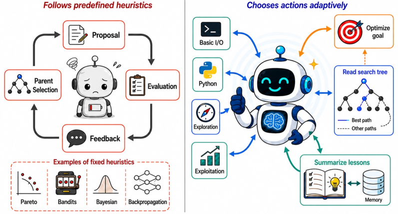
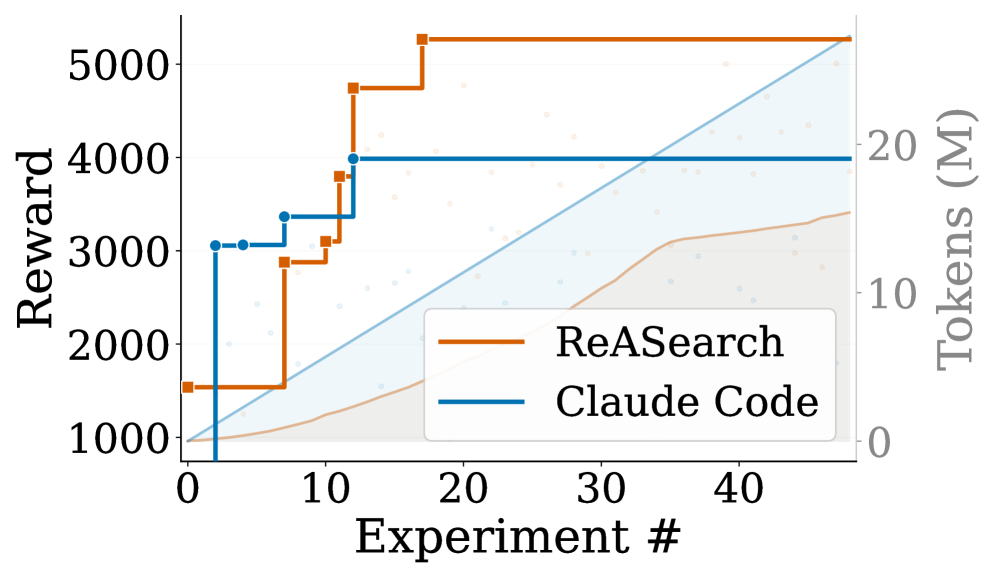

ReASearch: The Optimizer Is the Agent
TL;DR
- "The Optimizer Is the Agent: Reasoning-Driven Search across Prompts, Programs, and ML Workflows" (arXiv 2608.06714; Junbo Li, Boyi Liu, Canwen Xu, Yite Wang, Yuxiong He, Zhangyang Wang, Qiang Liu, Zhewei Yao — UT Austin & Snowflake) asks how much of the search policy in prompt/program/workflow optimization can be internalized by a single tool-using agent, instead of an external controller (evolution, bandits, textual gradients) that merely calls the LLM as a mutator.
- ReASearch is a deliberately simple code agent (file I/O, Python/Bash, compaction, a persistent
lessons.md) whose system prompt re-emits the optimization state every turn; the exact same scaffold, with swapped tools and instructions, handles prompt optimization, program evolution, and ML workflow optimization. - Across 14 tasks it is competitive with or better than specialized optimizers (GEPA, AdaEvolve, Shinka), e.g. AIME prompt optimization 46.0 → 52.0 (GEPA: 50.7), ARC-AGI-2 program evolution 12.5% → 50.0% test accuracy, and circle-packing solutions that edge past prior human best-known results at several problem sizes.
Why this matters
Every optimization framework this tracker follows — GEPA's evolutionary prompt search, AlphaEvolve-style program evolution, AutoML agents — shares one design decision: the strategic loop lives outside the model. An external controller decides which candidate to branch from, how to allocate evaluation budget, and when to restart; the LLM only proposes edits inside that hard-coded loop. ReASearch is the cleanest empirical test so far of the opposite bet: give one agent the tools and let reasoning be the search algorithm.
For anyone building self-improving harnesses this is a load-bearing question. If explicit outer-loop controllers are necessary, harness engineering stays algorithm design. If a reasoning agent can match them, the harness's job shifts to what ReASearch actually spends its effort on: state re-emission, memory curation, and budget-aware tool surfaces. The paper's Appendix F comparison against a Claude Code baseline with matched instructions is the most interesting artifact for this crowd — the authors argue the gap comes not from extra rules but from making search state "unavoidable, rather than merely available."
The core idea
Frame all three settings as optimizing a textual artifact \(z\) (a prompt, a program, a training config) over a space \(\mathcal{Z}\):
where \(x\) is a task instance, \(Y\) the system's output given artifact \(z\), and \(r\) the reward; for instance-free tasks (circle packing, algorithm discovery) the outer expectation vanishes. Prior work searches \(\mathcal{Z}\) with meta-heuristics. ReASearch instead packages every optimization operation — evaluation, diagnosis, editing, memory — as tools, and lets the agent decide what to test next, when to verify, when to revert, and when to stop exploring.

Figure 2 of the paper: prior methods use LLMs as mutators inside externally-controlled loops; ReASearch exposes the entire optimization loop to a single reasoning agent.How it works
The task-agnostic core. The agent has file I/O, Python/Bash execution, a compaction tool, and a persistent memory file. All task specificity enters through exactly two interfaces: the tool set and the task-specific system prompt. The authors single out python_exec as the most important tool — it turns the agent from a text reasoner into a computational one that writes analysis scripts over evaluation logs and programmatically identifies failure patterns.
State re-emission (the actual secret). Rather than leaving state in files the agent may or may not read, a small static layer holds the general rules while the rest is re-rendered into the system prompt every turn: current best result, a structured table of the last 20 experiments (parent, metric, status), persistent lessons, stagnation advisories after 3+ and 7+ flat evaluations, and a structured search-tree review (branch concentration, plateau signals).
Memory. The agent maintains lessons.md — what worked, what failed, what to try next — carried through context compaction. Lessons transfer across runs: initializing a fresh NanoGPT run with a prior run's lessons file starts it at 0.977 bpb instead of the ~0.998 default baseline. Notably, this simple three-slot schema matches or slightly beats richer task-specific memory schemas, which "can even hurt performance by encouraging rigid or noisy summaries."
Domain tools. For prompt optimization: get_next_minibatch (batch size chosen by the agent from its budget), call_student_model_batch (full trajectories on training examples), and validate_candidate, which deliberately returns only aggregate accuracy — exposing per-example validation trajectories caused clear overfitting (AIME drops from 52% to ~50%). The final prompt is not simply the best-validation candidate; a final turn reasons over the whole run history and may synthesize a new prompt. For program evolution and ML workflows: an evaluate/run_experiment tool, plus an edit_code tool that routes changes to a separate subagent so the main agent's context stays clean, with a verification subagent checking constraint compliance. Diagnosis stays in the main agent to preserve reasoning context.
Reconstructed core loop (from Section 2 and Appendix F — verify in the paper):
initialize: read baseline artifact, task prompt, empty lessons.md
loop until budget exhausted:
system_prompt <- static rules
+ goal/metric/direction (re-rendered every turn)
+ table of last 20 experiments (parent, metric, status, notes)
+ lessons.md contents
+ stagnation advisory if 3+/7+ evaluations without improvement
+ structured search-tree summary
agent reasons; picks a tool:
python_exec # analyze logs, small-scale experiments, statistics
get_next_minibatch / call_student_model_batch # cheap verification
validate_candidate # aggregate metric only
edit_code # delegated to a subagent; verified separately
evaluate / run_experiment # expensive evaluation
compact_context / update lessons.md
harness updates experiment table, best-so-far, search tree
final turn: reason over full history + lessons -> select or synthesize final artifact
Results
Prompt optimization (student models fixed, agent backbone Claude Sonnet 4.6): AIME 46.0 → 52.0 test accuracy vs GEPA's 50.7; HotpotQA 63.0 → 67.6 vs GEPA's 65.8. On Terminal-Bench 2.0 with a GPT-OSS-120B student, the baseline of 3.0 rises to 23.0 with a Sonnet 4.6 optimizer (GLM-5: 14.8, Kimi-2.5: 8.2 — the approach is backbone-agnostic, and scales with backbone capability).
Program evolution (same evaluator-call budgets as baselines): with Sonnet 4.6, ReASearch matches or slightly exceeds human best-known circle-packing results at several sizes (e.g. n=26: 2.636 vs 2.635; n=32: 2.940 vs 2.939) where AdaEvolve falls short; on Heilbronn triangles it essentially reaches best-known at n=12–14. On ARC-AGI-2, 85.0% train / 50.0% test accuracy vs AdaEvolve's 21.9% / 12.5%. EPLB (expert-parallel load balancing): 0.2305 vs AdaEvolve 0.1976, GEPA 0.1445, Shinka 0.1272 — though Shinka keeps the lead on transaction scheduling (4329 vs 4237).
ML workflows: NanoGPT 0.998 → 0.976 bpb, IMG-100 63.5 → 84.0, Atari Q*bert 475 → 4500, MuJoCo 1537 → 5267, crypto market prediction 0.0953 → 0.1110.
Ablations: on ARC-AGI-2, removing memory drops test accuracy 50.0% → 39.2%; removing Python tools → 32.5%. The qualitative analyses document emergent optimizer behaviors — cheap verification before expensive validation, reverting to earlier branches, variance calibration — none hardcoded. A favorite: on EPLB the agent was stuck at ~0.21 for 120+ turns, then diagnosed that its refinement phase only let experts with ≥2 replicas donate, and fixed exactly that constraint.

Figure 7 of the paper: performance and token usage across experiments, including the Claude Code baseline comparison.How it connects
- GEPA and the dspy-factorio examples (tracked today): GEPA is the strongest external-controller baseline here; the DSPy-Factorio repo teaches exactly the "programs, not prompts" workflow ReASearch competes against.
- Survey: Self-Evolving Coding Agents and the RSI reading roundup: ReASearch is the "internalize the loop" endpoint of the harness-evolution spectrum those cover.
- Prime Agent / pi-rlm: same philosophy — persistent state plus a thin general loop — applied to open-ended tasks rather than optimization.
- Sample More, Reflect Less (tracked): that paper found reflection loses to repeated sampling at equal token cost for single-shot reasoning; ReASearch is evidence the calculus flips for long-horizon optimization, where accumulated diagnosis is the point.
- AgentRunbook-C / memory items: the finding that a minimal what-worked/what-failed schema beats richer schemas is directly actionable for memory harness design.
Critical take
The headline claim ("mostly better than specialized optimizers") deserves scrutiny in three places. First, budget parity is defined in evaluator calls, but ReASearch's per-turn re-emission plus a frontier backbone burns far more optimizer-side tokens than GEPA-style controllers; Figure 7 reports usage, and the cost asymmetry is real even if evaluation (usually the true bottleneck) is matched. Second, the human-best-known "wins" in circle packing land in the fourth significant digit — impressive as parity, thin as a discovery claim. Third, the Claude Code comparison, while unusually careful (matched instructions, same backbone), is still one harness configuration; the authors themselves concede Claude Code's hook mechanism could in principle implement per-turn re-rendering. The emergent-behavior catalog is qualitative trajectory excerpts, so publication bias toward good anecdotes applies. None of this undermines the central result — a single reasoning agent with unavoidable state matching purpose-built optimizers across three domains — but the paper is best read as a strong existence proof, not a burial of external controllers.
If you remember three things
- A single tool-using agent, with no outer-loop search algorithm, matches or beats GEPA/AdaEvolve/Shinka across prompts, programs, and ML workflows — search strategy can be reasoned, not hardcoded.
- The load-bearing harness trick is re-emitting optimization state (best result, last-20 experiments, lessons, stagnation warnings) into the system prompt every turn — available-on-request memory fails exactly when the agent plateaus.
- Keep memory schemas minimal (what worked / what failed / what to try next) and validation feedback aggregate-only; richer feedback and richer schemas both measurably hurt.